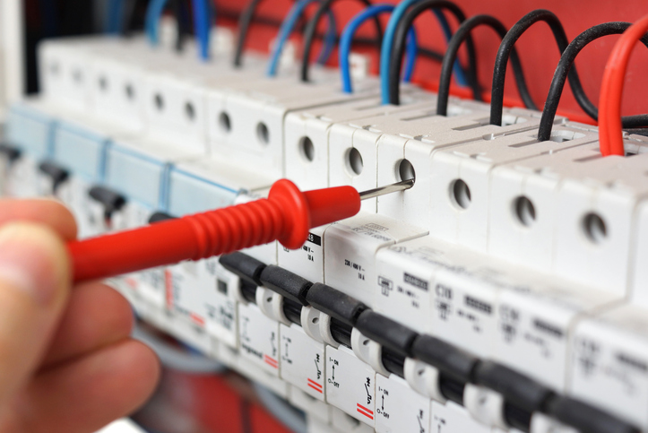

How do I arrange for a Renewal of mains inspection?
You or your electrician will need to complete a network application form to notify the network that you wish to change your mains.
Contact your Energy Retailer, giving them the address or ICP number of the building to arrange a service request to reseal the meter.
Have your electrician contact IEIO for the high-risk mains inspection. We can arrange the revenue meter resealing to coincide with our inspection.
How do I upgrade my Main earth?
Have your electrician contact IEIO to arrange an inspection, when he has completed his part of the work.

How do I Replace overhead power lines?
You or your electrician will need to complete a network application form to notify the network that you wish to replace your overhead power lines.
Have your electrician contact IEIO to arrange a Lines Contractor and perform an inspection.
What is the process for Switchboard upgrades or alterations?
Option 1: Electricity meters on switchboard
If there are electricity meters on the switchboard that you wish to replace (no seals can be broken without authorisation).
Contact your Energy Retailer, giving them your address or ICP number and arrange for a service request to relocate your meter to the new switchboard. A service request will be processed and later issued. Once the service request has been received by the metering contractor, the work can commence.
Have your electrician contact IEIO to arrange Metering and perform an inspection.
Option 2: Electricity meters NOT on switchboard
If the electricity meter is not located on the switchboard that you wish to replace.
Engage an electrician to make the necessary changes.
Have your electrician contact IEIO to perform an inspection.